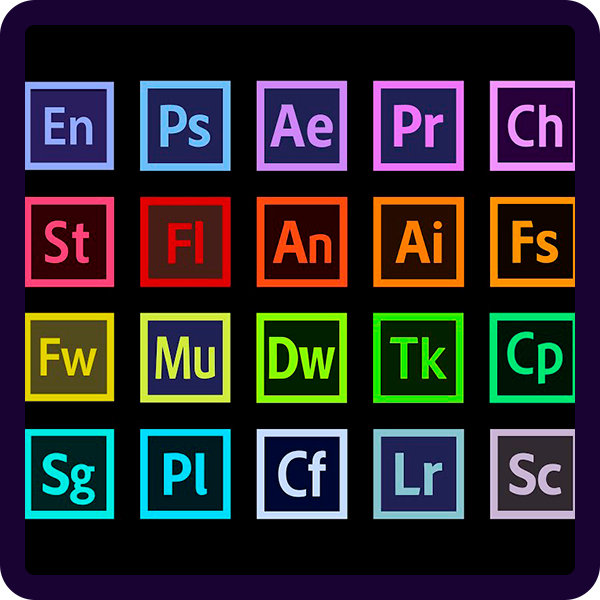
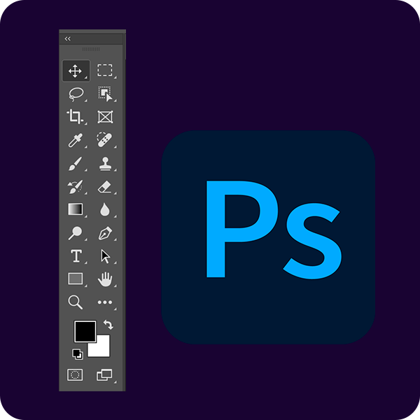

Som nystartet multimediedesignstuderende, har du nok opdaget hvor vigtigt det er at lære at bruge digitale værktøjer fra Adobe. Du kommer dog aldrig til at få brug for dem alle sammen og lige her finder du de programmer, som er relevante for dig, som multimediedesign-studerende.
LÆR OM ADOBEDu har glemt at få en blyant med i tasken, fordi du ikke har haft brug for en siden folkeskolen. Du kan slappe helt af. Alle skal starte et sted. Her får du guiden til hvordan du bedst muligt får startet din analoge designproces.
KOM GODT I GANG
